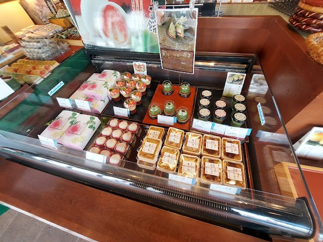
| 営業時間 | 月・火・水・木・金・土・日 8:00〜18:00 |
|---|---|
| 定休日 | なし(要最終確認) |
| 住所 | 岐阜県大垣市高屋町１丁目１７ |
| 予約 | 要確認 — ☎ 0584-75-3300 ／ 公式サイト |
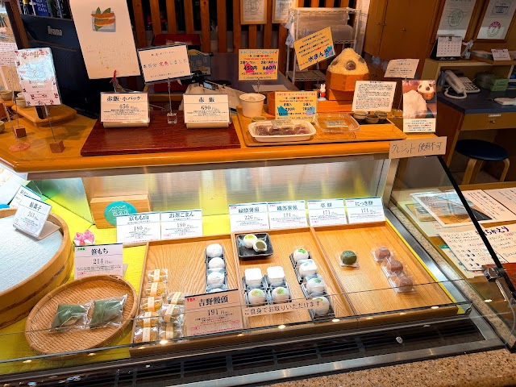
| 営業時間 | 月・火・木・金・土・日 8:30〜17:30 |
|---|---|
| 定休日 | 水曜 |
| 住所 | 岐阜県大垣市郭町１丁目６１ |
| 予約 | 要確認 — ☎ 0584-78-3226 ／ 公式サイト |
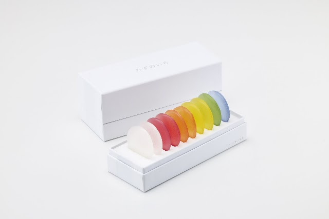
| 営業時間 | 月・火・水・木・金・土・日 9:00〜17:00 |
|---|---|
| 定休日 | なし(要最終確認) |
| 住所 | 岐阜県大垣市俵町39 |
| 予約 | 要確認 — ☎ 0120-785-311 ／ 公式サイト |
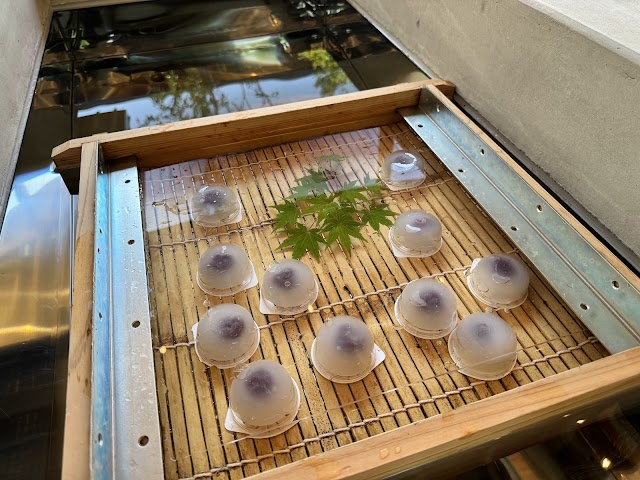
| 営業時間 | 月・水・木・金・土・日 9:00〜17:00 |
|---|---|
| 定休日 | 火曜 |
| 住所 | 岐阜県大垣市船町２丁目１ |
| 予約 | 要確認 — ☎ 050-8888-4239 |
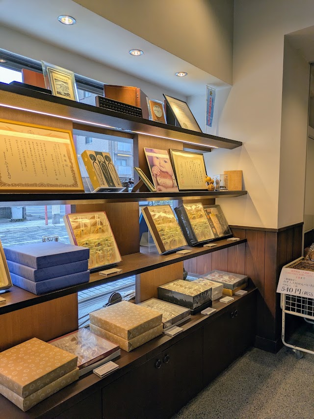
| 営業時間 | 月・火・木・金・土 9:30〜18:00 ／ 日 9:30〜17:00 |
|---|---|
| 定休日 | 水曜 |
| 住所 | 岐阜県大垣市本町２丁目１６ |
| 予約 | 要確認 — 公式サイト |
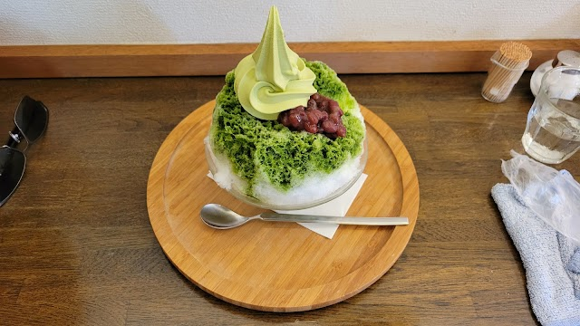
| 営業時間 | 火・水・木・金・土・日 9:00〜18:00 |
|---|---|
| 定休日 | 月曜 |
| 住所 | 岐阜県大垣市桐ヶ崎町３１ |
| 予約 | 要確認 — ☎ 0584-78-3275 ／ 公式サイト |
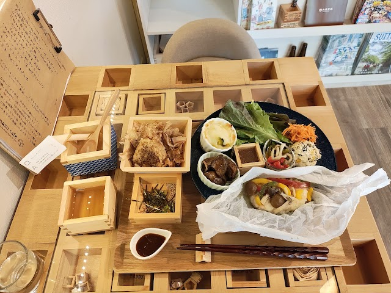
| 営業時間 | 月・火・木・金 11:00〜16:00 ／ 土・日 10:00〜17:00 |
|---|---|
| 定休日 | 水曜 |
| 住所 | 岐阜県大垣市東外側町２丁目９ 広瀬第二ビル 1F |
| 予約 | 要確認 — ☎ 090-9898-5468 ／ 公式サイト |
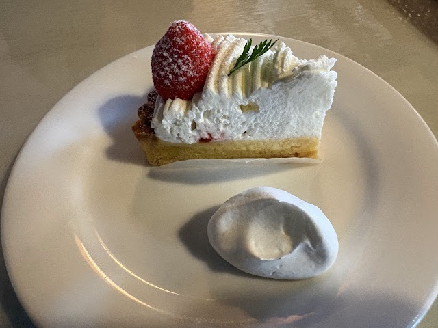
| 営業時間 | 月・火・木・金・土・日 10:00〜19:00 |
|---|---|
| 定休日 | 水曜 |
| 住所 | 岐阜県大垣市西外側町２丁目４５ |
| 予約 | 要確認 — ☎ 0584-73-3115 ／ 公式サイト |
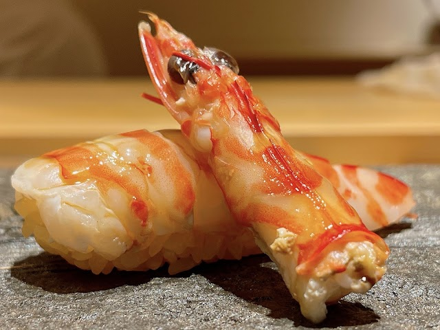
| 営業時間 | 月・火・木・金・土・日 11:30〜12:00, 17:30〜19:30 |
|---|---|
| 定休日 | 水曜 |
| 住所 | 岐阜県大垣市南頬町４丁目５８−１ |
| 予約 | 可 — ☎ 0584-78-2600 ／ 公式サイト |
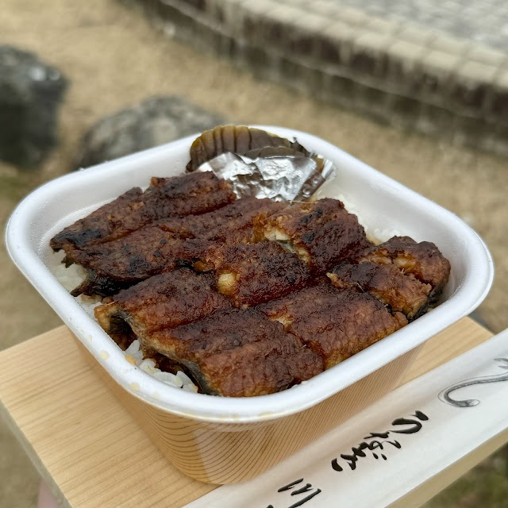
| 営業時間 | 月・火・木・金・土・日 11:00〜14:00, 17:00〜18:30 |
|---|---|
| 定休日 | 水曜 |
| 住所 | 岐阜県大垣市郭町東２丁目５８ |
| 予約 | 可 — ☎ 0584-78-3439 |
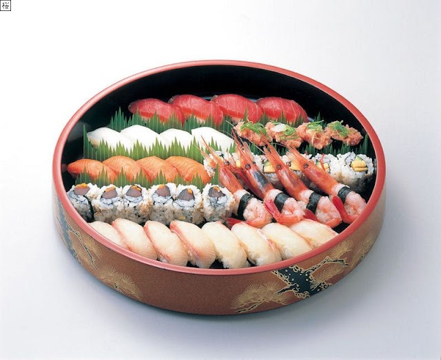
| 営業時間 | 月・水・木・金・土 11:00〜14:00, 17:00〜21:00 ／ 日 11:00〜14:00, 17:00〜20:00 |
|---|---|
| 定休日 | 火曜 |
| 住所 | 岐阜県大垣市室村町１丁目１２５ |
| 予約 | 可 — ☎ 0584-78-9424 ／ 公式サイト |
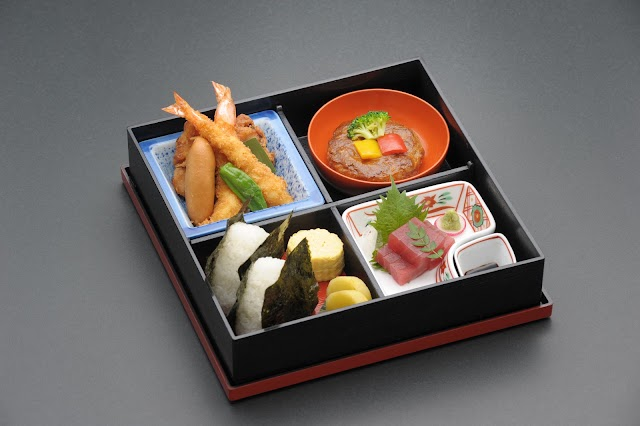
| 営業時間 | 火・水・木・金・土 11:30〜14:00, 17:00〜22:00 |
|---|---|
| 定休日 | 月・日曜 |
| 住所 | 岐阜県大垣市高砂町１丁目20 |
| 予約 | 可 — ☎ 0584-81-1290 ／ 公式サイト |
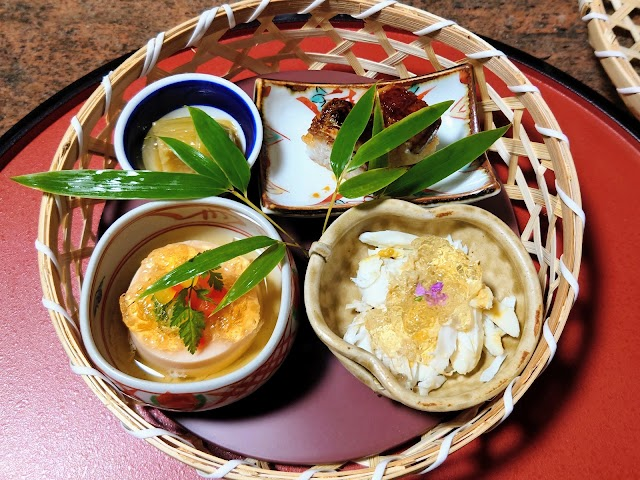
| 営業時間 | 月・火・水・木・金・土 11:30〜14:00, 18:00〜22:00 |
|---|---|
| 定休日 | 日曜 |
| 住所 | 岐阜県大垣市青柳町１丁目２７ |
| 予約 | 可 — ☎ 0584-47-8237 ／ 公式サイト |
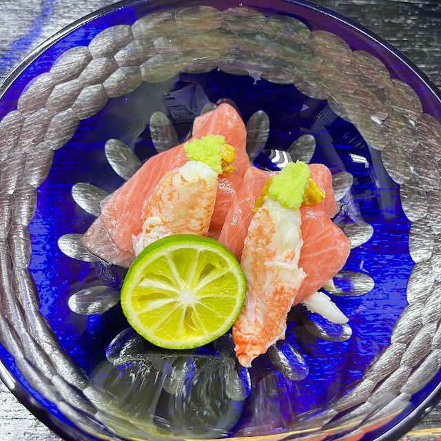
| 営業時間 | 月・火・水・木・金 12:00〜14:00, 18:00〜22:00 ／ 土・日 12:00〜14:00, 17:00〜22:00 |
|---|---|
| 定休日 | なし(要最終確認) |
| 住所 | 岐阜県大垣市東外側町１丁目１５ |
| 予約 | 可 — ☎ 0584-78-2843 ／ 公式サイト |
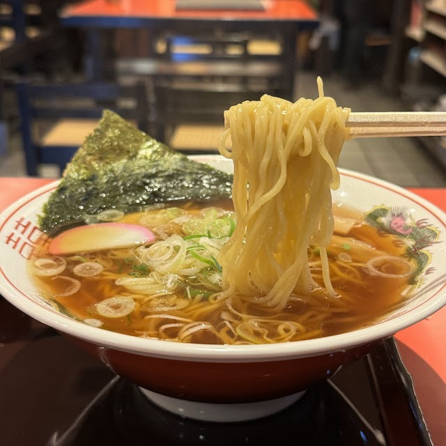
| 営業時間 | 火・水・木・土 11:00〜15:00 ／ 金 11:00〜15:00, 18:00〜21:00 |
|---|---|
| 定休日 | 月・日曜 |
| 住所 | 岐阜県大垣市御殿町１丁目５２ |
| 予約 | 要確認 — ☎ 0584-78-3081 |
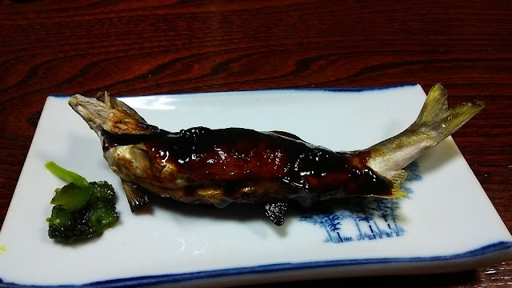
| 営業時間 | 月・火・水・木・金・土・日 11:30〜14:00, 17:00〜21:00 |
|---|---|
| 定休日 | なし(要最終確認) |
| 住所 | 岐阜県大垣市津村町２丁目４５ |
| 予約 | 可 — ☎ 0584-78-8879 |
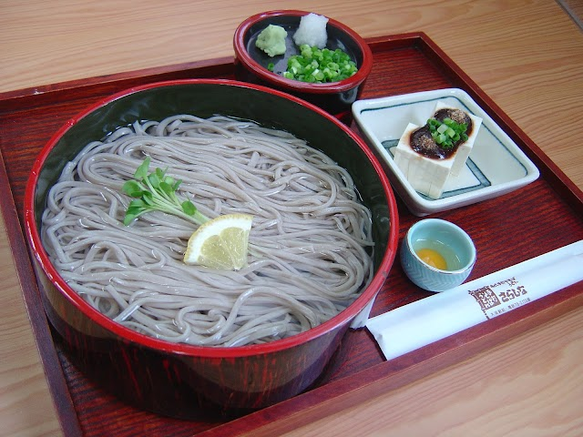
| 営業時間 | 11:30〜14:30／17:30〜20:30 |
|---|---|
| 定休日 | 金曜 |
| 住所 | 岐阜県大垣市高屋町１丁目８ |
| 予約 | 要確認 — ☎ 0584-78-2178 ／ 公式サイト |
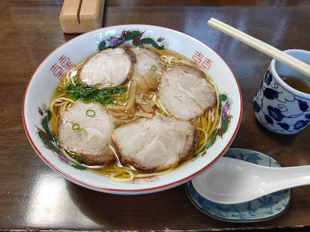
| 営業時間 | 火・水・木・金・土・日 10:30〜17:00 |
|---|---|
| 定休日 | 月曜 |
| 住所 | 岐阜県大垣市東長町４０ |
| 予約 | 要確認 — ☎ 0584-78-4054 ／ 公式サイト |
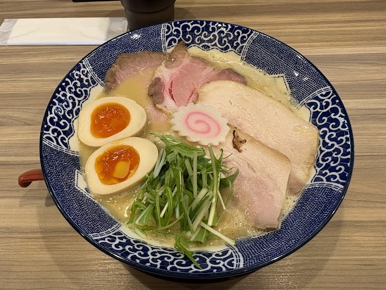
| 営業時間 | 月・木・金 10:30〜13:50 ／ 日 17:00〜19:55 |
|---|---|
| 定休日 | 火・水・土曜 |
| 住所 | 岐阜県大垣市熊野町４丁目６ |
| 予約 | 要確認 — ☎ 0584-91-2289 ／ 公式サイト |
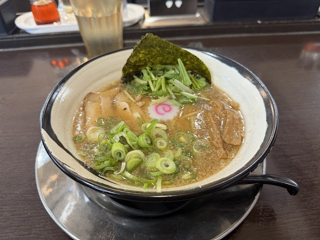
| 営業時間 | 月・木・金・土・日 7:00〜9:45, 11:30〜14:00 ／ 火 7:00〜9:45 |
|---|---|
| 定休日 | 水曜 |
| 住所 | 岐阜県大垣市静里町１４３ |
| 予約 | 要確認 — ☎ 0584-91-0789 ／ 公式サイト |
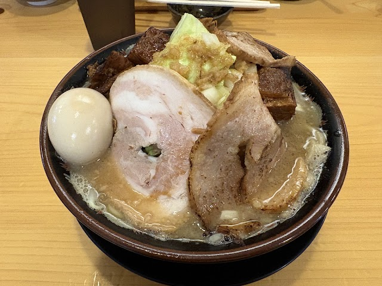
| 営業時間 | 月・火・水・木・金 11:00〜14:00 ／ 土 11:00〜14:30 |
|---|---|
| 定休日 | 日曜 |
| 住所 | 岐阜県大垣市中川町１丁目７３２−３ |
| 予約 | 要確認 — ☎ 0584-51-2895 ／ 公式サイト |
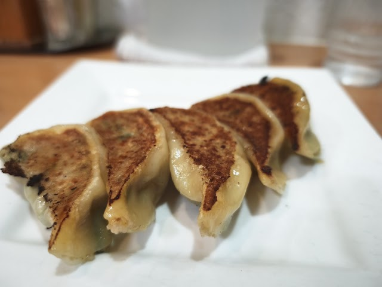
| 営業時間 | 月・木・金・土 11:30〜14:00, 17:30〜21:30 ／ 火・日 11:30〜14:00, 17:30〜21:00 |
|---|---|
| 定休日 | 水曜 |
| 住所 | 岐阜県大垣市東外側町２丁目１２ |
| 予約 | 可 — ☎ 0584-78-4950 |
| 営業時間 | 月・木・金・土・日 11:30〜13:30, 17:00〜20:30 |
|---|---|
| 定休日 | 火・水曜 |
| 住所 | 岐阜県大垣市竹島町８０−２ |
| 予約 | 可 — ☎ 0584-81-2243 |
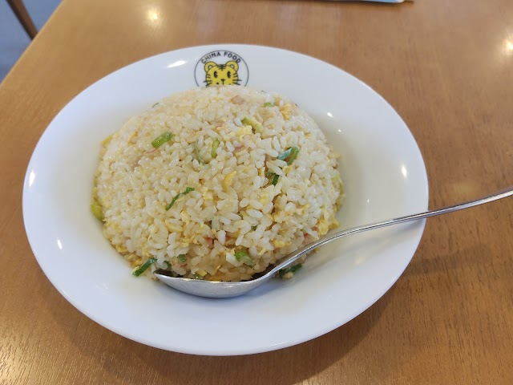
| 営業時間 | 月・火・水・木・金・土・日 11:00〜14:00, 17:00〜21:00 |
|---|---|
| 定休日 | なし(要最終確認) |
| 住所 | 岐阜県大垣市上面４丁目５４−１ |
| 予約 | 要確認 — ☎ 0584-47-9805 ／ 公式サイト |
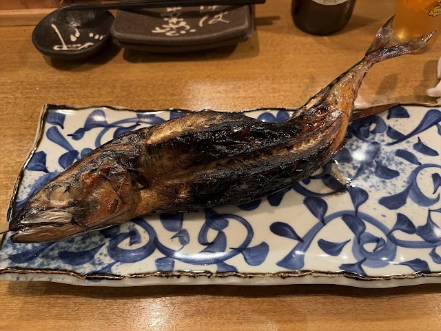
| 営業時間 | 月・金 17:00〜0:00 ／ 火・水・木 17:00〜23:00 ／ 土 16:00〜0:00 ／ 日 16:00〜23:00 |
|---|---|
| 定休日 | なし(要最終確認) |
| 住所 | 岐阜県大垣市高屋町１丁目１９ |
| 予約 | 可 — ☎ 0584-73-8899 ／ 公式サイト |
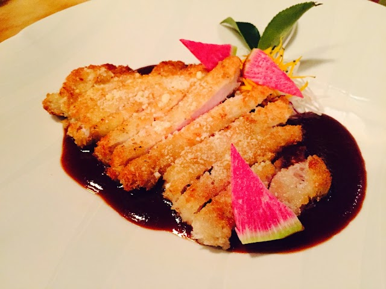
| 営業時間 | 火・水・木・金・土・日 17:30〜0:00 |
|---|---|
| 定休日 | 月曜 |
| 住所 | 岐阜県大垣市鶴見町２０７−１ ブルーム ２０７−２ |
| 予約 | 可 — ☎ 0584-81-7811 ／ 公式サイト |
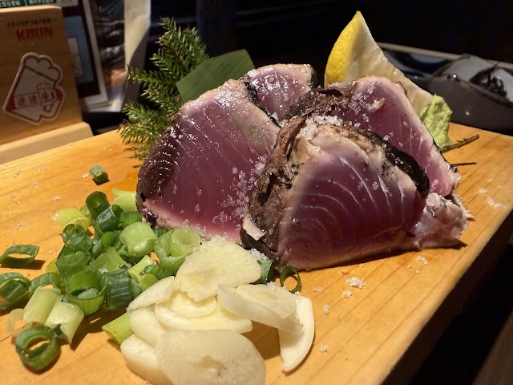
| 営業時間 | 月・火・木・金・土・日 17:00〜0:00 |
|---|---|
| 定休日 | 水曜 |
| 住所 | 岐阜県大垣市禾森町５丁目７５ 馬渕ビル 1F |
| 予約 | 可 — ☎ 0584-74-9990 ／ 公式サイト |
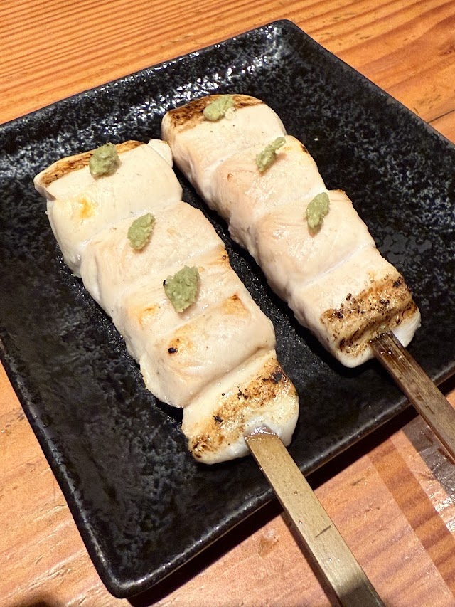
| 営業時間 | 火・水・木・金・土 18:00〜23:00 ／ 日 17:00〜22:00 |
|---|---|
| 定休日 | 月曜 |
| 住所 | 岐阜県大垣市上面２丁目１−１ |
| 予約 | 可 — ☎ 0584-77-7770 ／ 公式サイト |
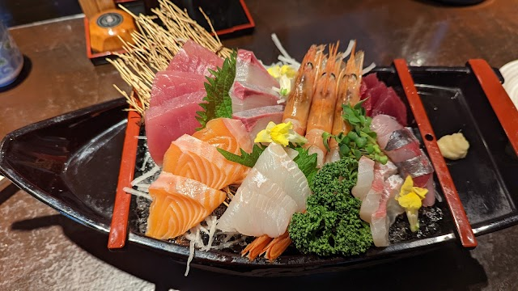
| 営業時間 | 月・火・木・金・土・日 11:00〜14:00, 17:30〜21:30 |
|---|---|
| 定休日 | 水曜 |
| 住所 | 岐阜県大垣市領家町１丁目86−１ |
| 予約 | 可 — ☎ 0584-51-0928 |
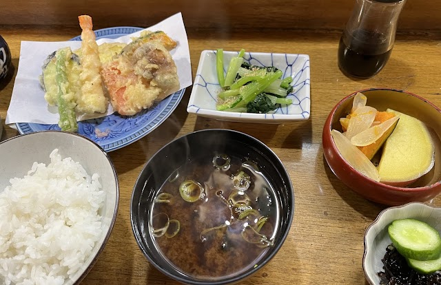
| 営業時間 | 11:30〜13:30／17:00〜20:30 |
|---|---|
| 定休日 | 日曜 |
| 住所 | 岐阜県大垣市郭町３丁目４３ |
| 予約 | 可 — ☎ 0584-78-9975 |
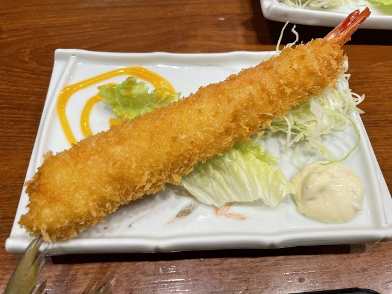
| 営業時間 | 月・木・金・土・日 11:00〜14:00, 17:30〜21:00 ／ 火 11:00〜14:00 |
|---|---|
| 定休日 | 水曜 |
| 住所 | 岐阜県大垣市長沢町５丁目３８ |
| 予約 | 要確認 — ☎ 0584-71-9119 |
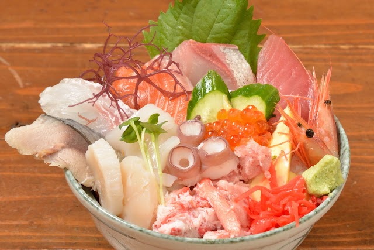
| 営業時間 | 月・火・木・金・土 11:30〜14:00, 17:30〜23:00 |
|---|---|
| 定休日 | 水・日曜 |
| 住所 | 岐阜県大垣市郭町２丁目９−３ |
| 予約 | 可 — ☎ 0584-73-6001 ／ 公式サイト |
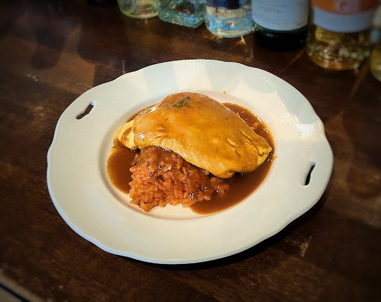
| 営業時間 | 月・火・木・金・土・日 11:30〜15:00, 17:00〜22:00 |
|---|---|
| 定休日 | 水曜 |
| 住所 | 岐阜県大垣市中ノ江２丁目２２−１ |
| 予約 | 可 — ☎ 0584-82-0228 ／ 公式サイト |
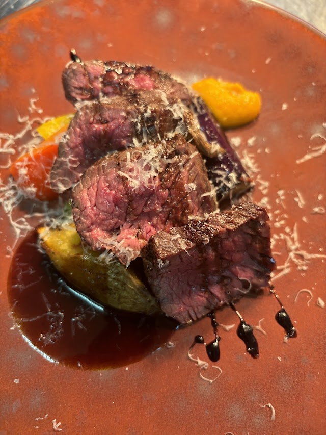
| 営業時間 | 火・水・木・金・土 11:30〜14:30, 17:30〜21:30 |
|---|---|
| 定休日 | 月・日曜 |
| 住所 | 岐阜県大垣市清水町５９−３ |
| 予約 | 可 — ☎ 0584-78-5525 ／ 公式サイト |
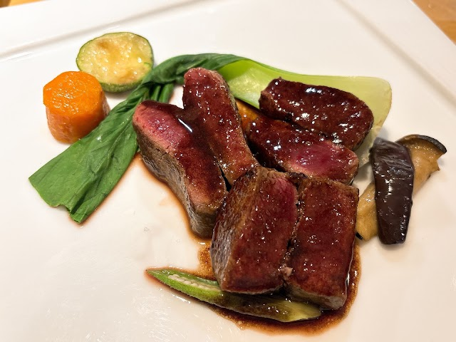
| 営業時間 | 月・火・木・金・土・日 11:30〜14:30, 18:00〜22:00 |
|---|---|
| 定休日 | 水曜 |
| 住所 | 岐阜県大垣市墨俣町二ツ木２１４−１ |
| 予約 | 可 — ☎ 0584-62-7887 ／ 公式サイト |
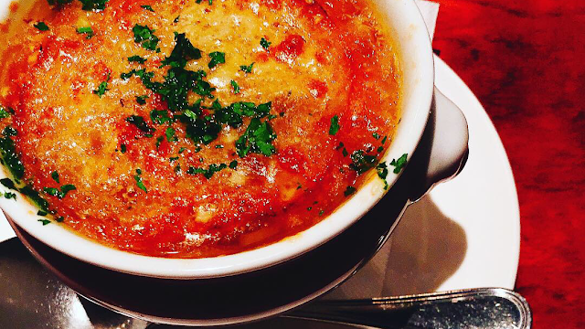
| 営業時間 | 月・水・木・金・土・日 11:30〜14:30, 18:00〜21:30 |
|---|---|
| 定休日 | 火曜 |
| 住所 | 岐阜県大垣市領家町２丁目１２９−１ |
| 予約 | 可 — ☎ 0584-84-8751 ／ 公式サイト |
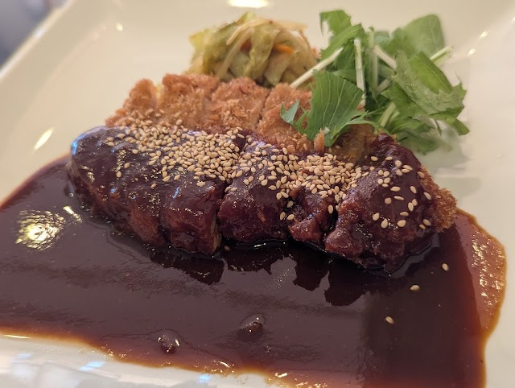
| 営業時間 | 月・火・水・金・土・日 11:00〜14:30, 18:00〜21:30 |
|---|---|
| 定休日 | 木曜 |
| 住所 | 岐阜県大垣市長松町７１１−１ |
| 予約 | 可 — ☎ 0584-91-5666 ／ 公式サイト |
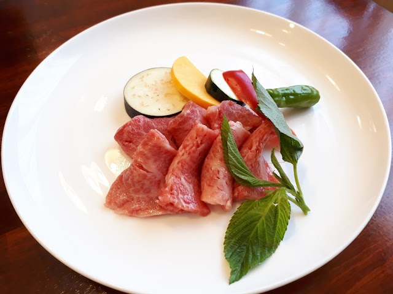
| 営業時間 | 11:30〜14:30（LO14:00）／18:00〜21:30（LO21:00） |
|---|---|
| 定休日 | 日曜・月曜 |
| 住所 | 岐阜県大垣市荒尾町１８１０−１１９ |
| 予約 | 可 — ☎ 0584-92-2622 ／ 公式サイト |
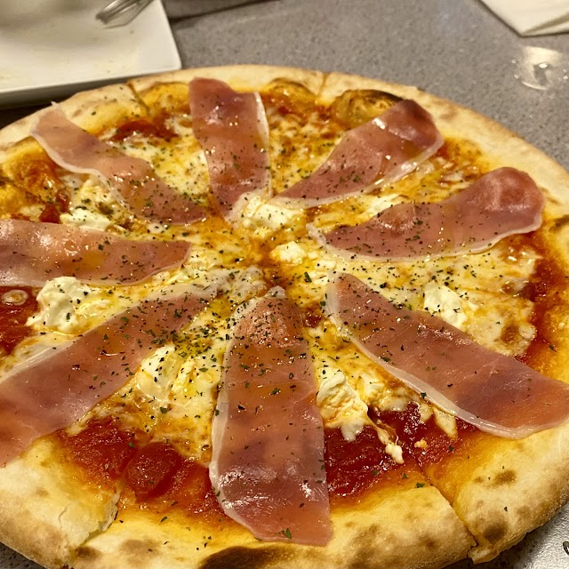
| 営業時間 | 月・火・木・金・土・日 11:30〜15:00, 18:00〜21:00 |
|---|---|
| 定休日 | 水曜 |
| 住所 | 岐阜県大垣市静里町２７８−１ |
| 予約 | 可 — ☎ 080-3023-1058 ／ 公式サイト |
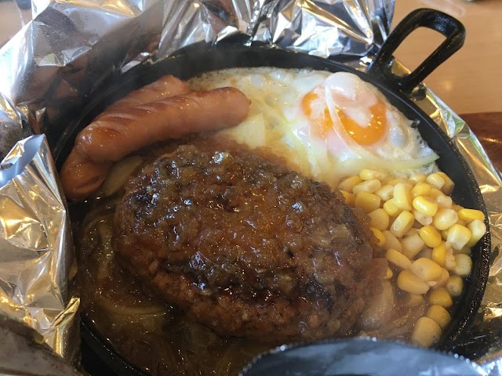
| 営業時間 | 月・火・水・金・土・日 7:30〜17:00 |
|---|---|
| 定休日 | 木曜 |
| 住所 | 岐阜県大垣市上面４丁目８０−１ |
| 予約 | 要確認 — ☎ 0584-78-9910 ／ 公式サイト |
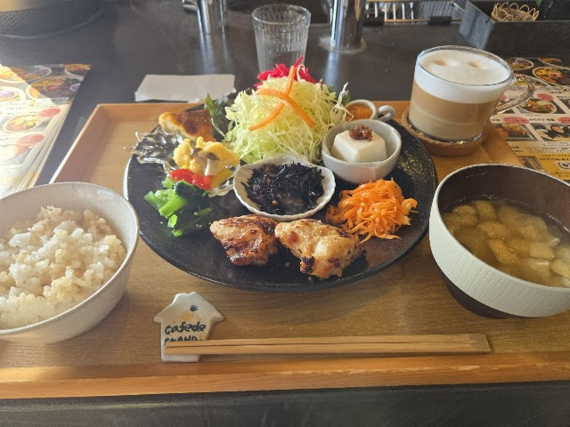
| 営業時間 | 月・水・木・金・土・日 8:00〜16:00 |
|---|---|
| 定休日 | 火曜 |
| 住所 | 岐阜県大垣市熊野町４丁目１１２ メゾンド 佐久間 1階 |
| 予約 | 要確認 — ☎ 0584-47-6519 ／ 公式サイト |
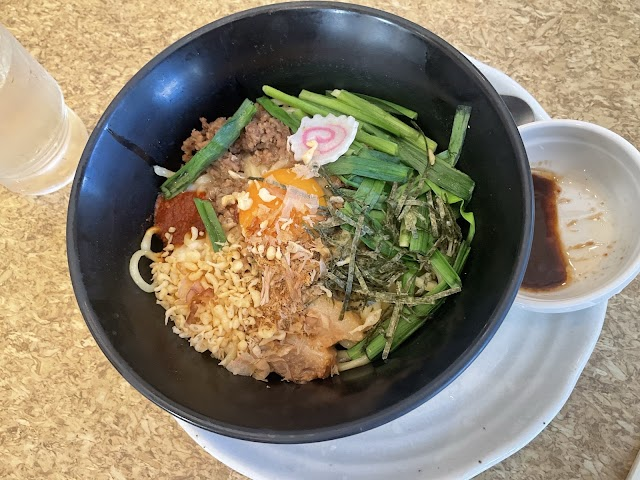
| 営業時間 | 火・水・木・金・土・日 6:00〜16:00 |
|---|---|
| 定休日 | 月曜 |
| 住所 | 岐阜県大垣市直江町２４０−１ |
| 予約 | 要確認 — ☎ 0584-75-2281 |
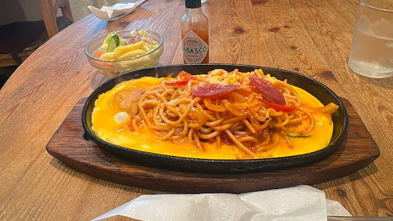
| 営業時間 | 月・火・水・木・金・土・日 8:00〜18:00 |
|---|---|
| 定休日 | なし(要最終確認) |
| 住所 | 岐阜県大垣市高屋町１丁目４８−４８ |
| 予約 | 要確認 — ☎ 0584-78-7817 |
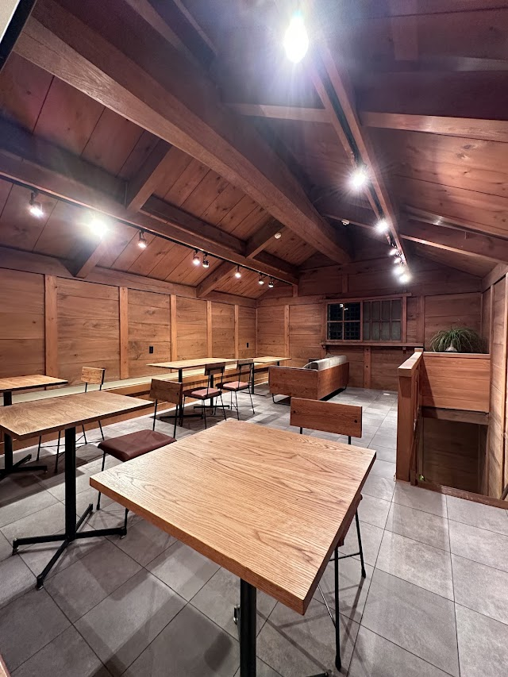
| 営業時間 | 月・木・金・土・日 10:00〜18:00 |
|---|---|
| 定休日 | 火・水曜 |
| 住所 | 岐阜県大垣市本町２丁目５３ |
| 予約 | 要確認 — 公式サイト |
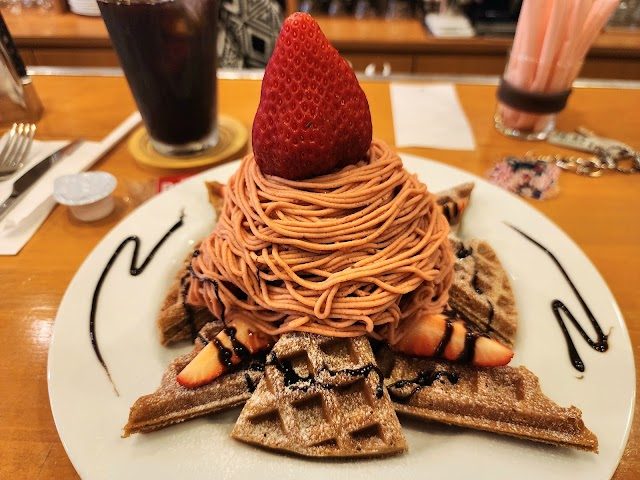
| 営業時間 | 月・火・木・金・土・日 9:30〜17:00 |
|---|---|
| 定休日 | 水曜 |
| 住所 | 岐阜県大垣市東外側町１丁目１−５ |
| 予約 | 要確認 — ☎ 0584-82-7589 ／ 公式サイト |
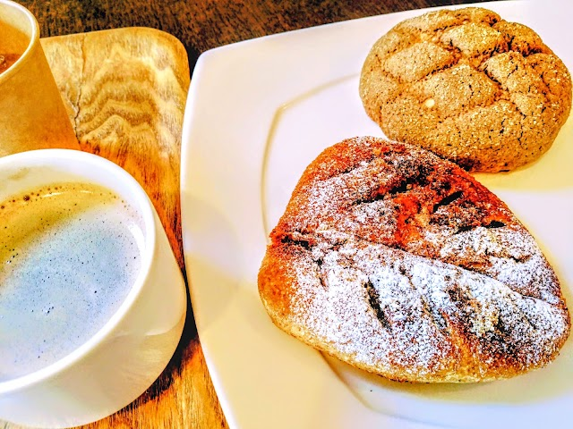
| 営業時間 | 月・火・水・木・金・土・日 8:00〜17:00 |
|---|---|
| 定休日 | なし(要最終確認) |
| 住所 | 岐阜県大垣市東町４丁目２１−１ |
| 予約 | 要確認 — ☎ 0584-71-7886 ／ 公式サイト |
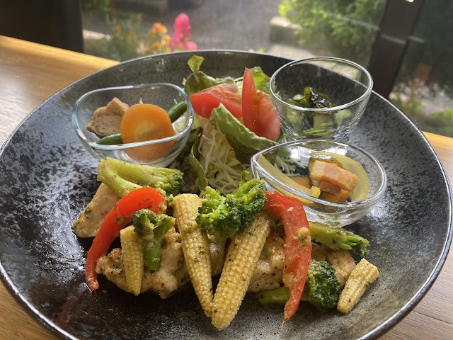
| 営業時間 | 月・火・水・木・土・日 8:00〜15:00 |
|---|---|
| 定休日 | 金曜 |
| 住所 | 岐阜県大垣市三津屋町４丁目７２−２ |
| 予約 | 可 — ☎ 0584-84-3339 |
本ガイドは個人利用目的で作成。掲載情報は2026年8月時点の調査に基づく。写真出典: Google Maps投稿写真(©各投稿者/Google)。